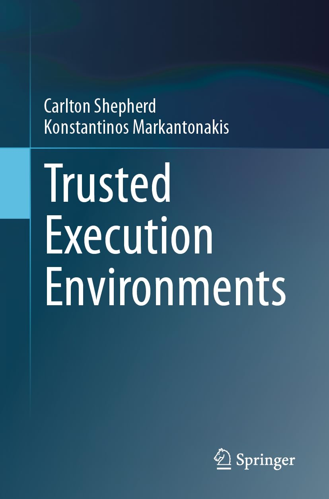

Publications
Also available on Google Scholar.
Book

C. Shepherd, K. Markantonakis, Trusted Execution Environments, Springer Nature, 2024.
A comprehensive treatment of the design, security properties, and deployment of trusted execution environments across modern hardware platforms, covering Arm TrustZone, AMD SEV, Intel SGX and TDX, the Trusted Platform Module, and secure elements.
Side-channel and Fault Injection Attacks
- C. Shepherd, E. A. J. Hurley, Entropy Collapse in Mobile Sensors: The Hidden Risks of Sensor-Based Security, Journal of Information Security and Applications, Elsevier, 2025.
- C. Shepherd, J. Kalbantner, B. Semal, K. Markantonakis, A Side-channel Analysis of Sensor Multiplexing for Covert Channels and Application Fingerprinting on Mobile Devices, IEEE Transactions on Dependable and Secure Computing, 2023.
- C. Shepherd, B. Semal, K. Markantonakis, Investigating Black-box Function Recognition Using Hardware Performance Counters, IEEE Transactions on Computers, 2022.
- C. Shepherd, K. Markantonakis, N. van Heijningen, D. Aboulkassimi, C. Gaine, T. Heckmann, D. Naccache, Physical Fault Injection and Side-Channel Attacks on Mobile Devices: A Comprehensive Analysis, Computers & Security, Elsevier, 2021.
Trusted Execution Environments and Attestation
- Z. Sha, C. Shepherd, A. Rafi, K. Markantonakis, Control-flow Attestation: Concepts, Solutions, and Open Challenges, Computers & Security, Elsevier, 2025.
- C. Shepherd, K. Markantonakis, G-A. Jaloyan, LIRA-V: Lightweight Remote Attestation for Constrained RISC-V Devices, IEEE Workshop on the Internet of Safe Things (SafeThings), in conjunction with IEEE S&P, 2021.
- C. Shepherd, R. N. Akram, K. Markantonakis, Remote Credential Management with Mutual Attestation for Trusted Execution Environments, 12th IFIP Int'l Conference on Information Security Theory and Practice (WISTP '18), Springer, 2018.
- C. Shepherd, R. N. Akram, K. Markantonakis, EmLog: Tamper-Resistant System Logging for Constrained Devices with TEEs, 11th IFIP Int'l Conference on Information Security Theory and Practice (WISTP '17), Springer, 2017.
- C. Shepherd, R. N. Akram, K. Markantonakis, Establishing Mutually Trusted Channels for Remote Sensing Devices with Trusted Execution Environments, 12th Int'l Conference on Availability, Reliability and Security (ARES '17), ACM, 2017.
- C. Shepherd, R. N. Akram, K. Markantonakis, Towards Trusted Execution of Multi-modal Continuous Authentication Schemes, 32nd Symposium on Applied Computing (ACM SAC '17), ACM, 2017.
- C. Shepherd, G. Arfaoui, I. Gurulian, R. P. Lee, K. Markantonakis, R. N. Akram, D. Sauveron, E. Conchon, Secure and Trusted Execution: Past, Present and Future — A Critical Review in the Context of the Internet of Things and Cyber-Physical Systems, 15th IEEE Int'l Conference on Trust, Security and Privacy in Computing and Communications (TrustCom '16), IEEE, 2016.
Proximity Detection and NFC Security
- K. Markantonakis, J. A. Meister, I. Gurulian, C. Shepherd, R. N. Akram, E. Frank, K. Mayes, Using Ambient Sensors for Proximity and Relay Attack Detection in NFC Transactions: A Reproducibility Study, IEEE Access, 2024.
- I. Gurulian, C. Shepherd, K. Markantonakis, E. Frank, R. N. Akram, K. Mayes, On the Effectiveness of Ambient Sensing for Detecting NFC Relay Attacks, 16th IEEE Int'l Conference on Trust, Security and Privacy in Computing and Communications (TrustCom '17), IEEE, 2017.
- Invited Paper I. Gurulian, K. Markantonakis, C. Shepherd, E. Frank, R. N. Akram, Proximity Assurances Based on Natural and Artificial Ambient Environments, 10th Int'l Conference on Innovative Security Solutions for Information Technology and Communications (SECITC '17), Springer, 2017.
- C. Shepherd, I. Gurulian, E. Frank, K. Markantonakis, R. N. Akram, K. Mayes, E. Panaousis, The Applicability of Ambient Sensors as Proximity Evidence for NFC Transactions, Mobile Security Technologies (MoST), IEEE Security & Privacy Workshops, IEEE, 2017.
- G. Haken, K. Markantonakis, I. Gurulian, C. Shepherd, R. N. Akram, Evaluation of Apple iDevice Sensors as a Potential Relay Attack Countermeasure for Apple Pay, 3rd ACM Workshop on Cyber-Physical System Security (CPS-SPC '17), ACM AsiaCCS, 2017.
Mobile and IoT Security
- Y. Shen, C. Shepherd, C. M. Ahmed, S. Shen, S. Yu, Malware Patching Strategies in Edge Intelligence IoT Systems: A Differential Games Approach with Spiking Neural Networks, IEEE Transactions on Dependable and Secure Computing, 2026.
- Y. Shen, C. Shepherd, C. M. Ahmed, S. Shen, S. Yu, Integrating Deep Spiking Q-Network into Hypergame-Theoretic Deceptive Defence for Mitigating Malware Propagation in Edge Intelligence-Enabled IoT Systems, IEEE Transactions on Services Computing, 2025.
- Y. Shen, C. Shepherd, C. M. Ahmed, S. Shen, S. Yu, Privacy Preservation Strategies for Malware-Infected Edge Intelligence Systems: A Bayesian Stochastic Game-Based Approach, IEEE Transactions on Mobile Computing, 2025.
- Best Paper Award C. Verdeyen, C. Shepherd, K. Markantonakis, R. N. Akram, R. Milroy, DECML: Distributed Edge Consensus Machine Learning Framework, IEEE Global Conference on Artificial Intelligence and Internet of Things (GCAIoT), 2024.
- Y. Shen, C. Shepherd, C. M. Ahmed, S. Shen, X. Wu, W. Ke, S. Yu, Game-theoretic Analytics for Privacy Preservation in Internet of Things Networks: A Survey, Engineering Applications of Artificial Intelligence, Elsevier, 2024.
- Y. Shen, C. Shepherd, C. M. Ahmed, S. Shen, S. Yu, SGD3QN: Joint Stochastic Games and Dueling Double Deep Q-networks for Defending Malware Propagation in Edge Intelligence-Enabled Internet of Things, IEEE Transactions on Information Forensics and Security, 2024.
- Y. Shen, C. Shepherd, C. M. Ahmed, S. Yu, T. Li, Comparative DQN-improved Algorithms for Stochastic Games-based Automated Edge Intelligence-enabled IoT Malware Spread-suppression Strategies, IEEE Internet of Things Journal, 2024.
- P. Mainali, C. Shepherd, Privacy-Enhancing Fall Detection from Remote Sensor Data Using Multi-Party Computation, 14th Int'l Conference on Availability, Reliability and Security (ARES '19), ACM, 2019.
- P. Mainali, C. Shepherd, F. A. P. Petitcolas, Privacy-Enhancing Context Authentication from Location-Sensitive Data, 14th Int'l Conference on Availability, Reliability and Security (ARES '19), ACM, 2019.
- C. Shepherd, F. A. P. Petitcolas, R. N. Akram, K. Markantonakis, An Exploratory Analysis of the Security Risks of the Internet of Things in Finance, 14th Int'l Conference on Trust, Security and Privacy in Digital Business (TrustBus '17), Springer, 2017.
Digital Rights Management
- A. Rafi, K. Markantonakis, H. Rafi, C. Shepherd, Z. Sha, W3C Encrypted Media Extensions in Practice: A Closer Look at Security and Privacy Risks, 8th Int'l Conference on Signal Processing and Information Security (ICSPIS), 2025.
- A. Rafi, C. Shepherd, K. Markantonakis, A First Look at Digital Rights Management Systems for Secure Mobile Content Delivery, 22nd IEEE Int'l Conference on Trust, Security and Privacy in Computing and Communications (TrustCom '23), IEEE, 2023.
Blockchain and Applied Cryptography
- Y. Cai, K. Markantonakis, C. Shepherd, Addressing Network Packet-based Cheats in Multiplayer Games: A Secret Sharing Approach, arXiv:2501.10881, 2025.
- J. Kalbantner, K. Markantonakis, D. Hurley-Smith, C. Shepherd, ZKP Enabled Identity and Reputation Verification in P2P Marketplaces, IEEE Int'l Conference on Blockchain, 2024.
- J. Kalbantner, K. Markantonakis, D. Hurley-Smith, C. Shepherd, B. Semal, A DLT-based Smart Contract Architecture for Atomic and Scalable Trading, arXiv:2105.02937, 2021.
Other Work
- C. Shepherd, Generative AI Misuse Potential in Cyber Security Education: A Case Study of a UK Degree Programme, Intelligent Computing, Lecture Notes in Networks and Systems (LNNS), Springer, 2025 (to appear).
- Best Paper Award V. Vagal, K. Markantonakis, C. Shepherd, A New Approach to Complex Dynamic Geofencing for Unmanned Aerial Vehicles, 40th AIAA/IEEE Digital Avionics Systems Conference (DASC), IEEE, 2021.
- R. Kirkham, C. Shepherd, T. Plötz, BlobSnake: Gamification of Feature Extraction for 'Plug and Play' Human Activity Recognition, British HCI Conference, ACM, 2015.
- F. Hao, D. Clarke, C. Shepherd, Verifiable Classroom Voting: Where Cryptography Meets Pedagogy, Security Protocols Workshop, Cambridge, Springer, 2013.
Thesis
- C. Shepherd, Techniques for Establishing Trust in Modern Constrained Sensing Platforms with Trusted Execution Environments, Ph.D. Thesis, Royal Holloway, University of London, 2019.